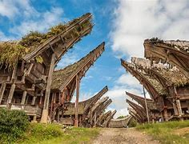

Artikel 1
Tongkonan adalah rumah adat orang Toraja, yang merupakan tempat tinggal, kekuasaan adat, dan perkembangan kehidupan sosial budaya orang Toraja.
Tongkonan adalah rumah adat orang Toraja, yang merupakan tempat tinggal, kekuasaan adat, dan perkembangan kehidupan sosial budaya orang Toraja.
Ritual Ma'nene merupakan salah satu tradisi suku Toraja, Sulawesi Selatan, berupa membersihkan jenazah leluhur yang telah berbentuk mumi.
Tedong silaga sebagai salah satu rangkaian acara dalam rambu solo’ memiliki tujuan untuk memberikan penghiburan bagi keluarga yang sedang berduka. Meski sedang bersedih karena kehilangan orang tersayang, masyarakat Suku Toraja yakin bahwa kematian memang boleh ditangisi, tetapi juga tetap harus bergembira karena mengantarkan manusia kembali ke surga.